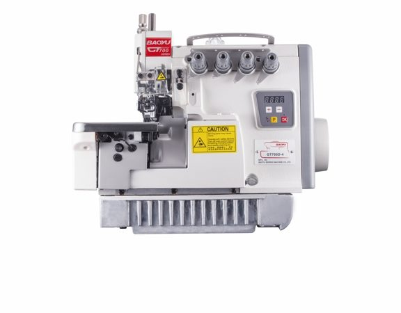

Назад
Описание:Baoyu GT-700D-4 — это профессиональная швейная машинка, предназначенная для работы в мастерских и на небольших производствах.
Характеристики:
- Скорость шитья: до 1200 стежков в минуту
- Типы строчек: 20 и более, включая декоративные и функциональные
- Прочные механизмы
- автоматическое закрепление нитей
Цена: 380$